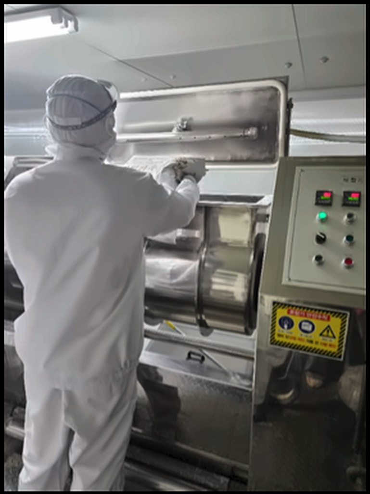

The Noodle · ザ・ヌードル
良いうどんは、結局麺から始まります。
ウドンキノヤは自社製麺工場を運営し、48時間熟成麺を標準化されたワンパック形態で店舗に供給しています。
Q&A
ウドンキノヤは店舗で直接麺を作らなければなりませんか？
いいえ。ウドンキノヤは本社で標準化した48時間熟成麺を供給するため、 店舗で毎日直接練って製麺する必要はありません。 本社が製麺・熟成・パッキングまで済ませた麺を店舗に届け、 店舗は検証済みのプロセスで茹でて盛るだけで済みます。
熟成の理由
Why 48 Hours · なぜ48時間なのか
48時間が生み出す
コシのある楽しさ。
水、塩、小麦粉。シンプルな材料ほど原則は厳しくなります。 ウドンキノヤは、練った後に48時間の低温熟成工程を経ることで 今のコシのある食感が完成すると判断し、この工程を標準として固定しました。
現在の配合と熟成方式を確定するまでに13ヶ月の麺研究期間がありました。

48H Aged
キノヤ独自の技術
Core Technology · コア技術
独自の自家製麺技術、
ワンパック化に成功。
Core Technology
自家製麺と同等の品質の約80cmうどん麺、
簡単な調理方式で速い回転率を実現。
ウドンキノヤは自社製麺工場を運営しています。 本社が毎日練り・熟成・パッキングまで済ませた麺を店舗に供給し、 店舗は検証済みのプロセスで茹でて盛るだけで済みます。
01 · Factory
自家製麺工場
キノヤ自社製麺工場、
毎日練りから熟成まで。
毎日練りから熟成まで。
02 · One-Pack
ワンパック化
約80cm熟成麺のワンパック、
店舗は茹でるだけで済みます。
店舗は茹でるだけで済みます。
麺の長さ・熟成時間は本社標準工程基準であり、季節・環境によって細部の管理値が調整される場合があります。
13ヶ月
麺研究期間
現在の配合と熟成方式を確定するまでにかかった研究期間です。
48時間
麺熟成時間
練った後、低温熟成を経て完成するウドンキノヤの食感基準です。
約80cm
麺一本の長さ
ワンパック化された熟成麺の基準長さであり、個体差がある場合があります。
Next Step